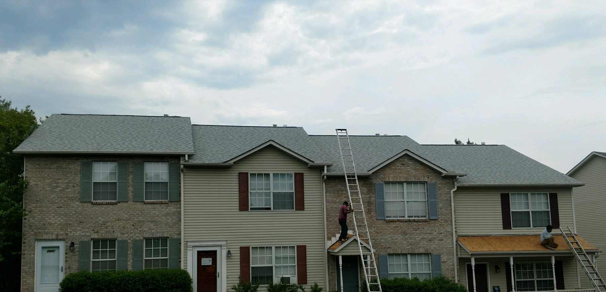
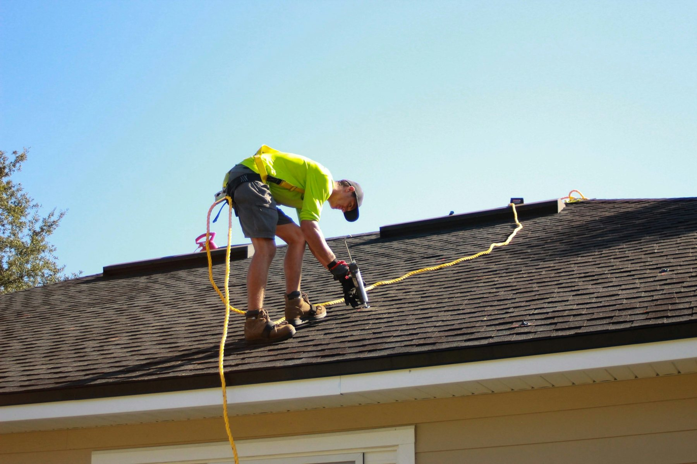

Commercial Roofing
Roofing by JMJ has factory trained and certified commercial installers to handle all of your commercial roofing needs.
Roofing in Knoxville, TN
Trusted Knoxville roofer since 1986. Family-owned, BBB A+ rated, expert roof repairs, roof replacement and commercial roofing services! We serve Knoxville TN and the surrounding areas.
Call to book or ask a question.
(865) 389-4258200 Prosperity Dr, Knoxville, TN
Roofing by JMJ has factory trained and certified commercial installers to handle all of your commercial roofing needs.
A compromised roof can lead to leaks that introduce moisture into your living spaces, creating the perfect environment for mold to thrive.
We also handle
Roofing By JMJ has been in business since 1986.
Tennessee licensed, insured and bonded.
Owner Scott Potter runs the business.
Why Choose a CertainTeed SELECT ShingleMaster™?
Rated 5 out of 5 on Google.
Based in Knoxville, TN and serving Oak Ridge, Farragut, Loudon and nearby.


Rated 5 stars on Google.
“I can’t say enough good things about JMJ! I got their name from a neighbor after seeing how good of a job was done. They didn’t disappoint when they did mine, solid contact from Scott from the quote to completion of the job. Arrived promptly when they said they would be there, and when done, did an incredible job of cleanup around my yard, patio, sidewalk and driveway!!! Would recommend time and time again!!”
“Scott and Christian at Roofing by JMJ were great! We used them for a recent roof repair and they were very responsive, easy to communicate with and had very fair pricing. We had an additional repair that was needed after the roofing work was completed and Scott made sure to stay in touch with us until everything was resolved. I would recommend JMJ and will be using them for future roofing repairs.”
“This roofing company is by far the most honest and reasonable in Knoxville. Christian is very friendly and professional. The owner is very personable and kind. The work was performed quickly with quality, only using the best products. The workers cleaned up my yard extremely well. I highly recommend this company. Thank you, Mr. Scott and Christian for proving me with excellent service. I love my new roof!”
Not sure if we cover your address? Call (865) 389-4258 and ask.
Call Roofing By JMJ for a free estimate.